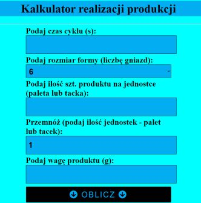

Kalkulator realizacji produkcji

Na podstawie podanego czasu cyklu maszyny i innych wielkości, narzędzie wylicza czas realizacji produkcji (także konkretną godzinę realizacji), wydajność i ilość potrzebnego materiału.
Problemy jakościowe